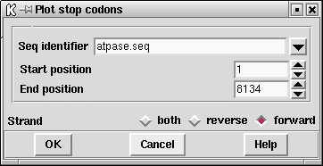

Stop codons can be searched for on either (or both) strands of the sequence. The stop codons are displayed graphically, with a different colour used for each reading frame, and their positions can also be listed in the Output Window. If any of the gene search methods are currently being displayed, the stop codons will automatically be plotted on top of the corresponding frame. As usual the graphical plots can be dragged and dropped to new locations.

In the example below we show the stop codon search results after they
have been drawn on a plot containing results from
a protein gene search method. Here we can see that the open reading
frames coincide with the highest scoring segments from the protein gene
prediction plots.
![[picture]](spin_stops_p,6in.png.html)
(Click for full size image)
![[picture]](spin_stops_p2,6in.png.html)
(Click for full size image)
Last generated on 25 April 2016.